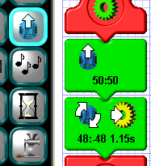
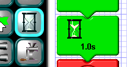
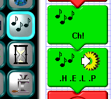
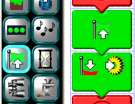
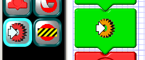
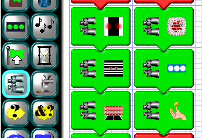
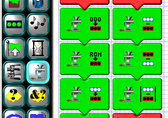

LED Tile
Motion Tile
 The motion tile is what you use to command the Scribbler to move or stop. It can be as simple as the top tile in the example at the left suggests (i.e. move forward at three-quarters speed) or more complex, like the second example (rotate right at about half-speed for 1.15 seconds, then stop and call the "yellow" subroutine).
There are three types of motion, set (shown here as "="), increment (+), and multiply (×). These are chosen using the motion type select
box. Increment adds the left and right values to the current wheel velocities, but won't go below
As with some other action tiles, the motion tile also allows you to call a subroutine once the programmed action is complete. Which subroutine to call is selected using the multiple-choice button with the gear on it. (Subroutines are discussed in a later section.) All multiple-choice buttons have three little yellow squares in their upper-righthand corner. You can cycle through the choices by clicking the button repeatedly.
Pause Tile
 The pause tile is used to suspend the Scribbler's program temporarily for periods ranging from 0.001 second to 60 seconds. It will not change the Scribbler's state, however. If the Scribbler is moving, it will continue to move during the pause. If any of its LEDs are on, they will stay on.Sound Tile
 The sound tile is used to activate the Scribbler's speaker for playing short tunes, such as the bugle call "Charge!" in the first example at the left, and sound effects, such as spelling "HELP" in Morse code in the second example. The program comes with a library of soundbites which can be strung together in various sequences to obtain the desired sounds. It is also possible for the sound tile to call a subroutine when it is finished playing a sound.Once you've assembled your sound sequence, you can play it back on your PC to test it by clicking the play button. The play button arrow will light up and remain lighted until the sequence has played back or until you click it again to stop it. You can adjust the overall tempo of your sequence before testing by using the slider at the top of the tile (the one with the turtle and racehorse). There's also a volume control for the PC that you can adjust during playback. The tempo control will also affect sounds coming from the Scribbler when your program is uploaded. The volume control is only for the PC.
In addition to the overall tempo adjustment, you can also adjust the tempo and frequency of individual soundbites in the sequence. This is done using the spinboxes to the left of the play button. The first controls the duration of the soundbite, 1/4 being the default duration. The second allows you to shift the frequency of the soundbite down an octave, or up by one or two octaves. These controls are used mainly for the individual note soundbites in the keyboard section of the library, so you can compose your own simple tunes. But they will work for any of the soundbites in the library.
Important note: Use sound sparingly! Long sound sequences use up enormous amounts of the Scribbler's program memory, and it's all too easy not to have any left for the other things the Scribbler can do.
Flag Tile
 The flag tile is used to signal other parts of your program that some event occurred. There are seven different-colored flags, and the flag tile allows any one of them to be raised or lowered. Later, you can use a conditional tile to check the state of a given flag and react accordingly. As in the second tile at the left, the flag tile can also call a subroutine once it's raised or lowered a flag.Call Subroutine Tile
 The call subroutine tile is used to call a subroutine without any other intervening action. Its edit box is simply a multiple-choice button for choosing the subroutine to call.Observe Sensor Tile
 The observe sensor tile is used to query one of the Scribbler's sensors before using it in a conditional. There are currently six sensors that can be independently observed. Starting in the first column at left, from top to bottom, they are: the line sensor, the barcode sensor (just the line sensor given a different job to do), and the obstacle sensor. In the second column are the crash (stall) sensor, the light sensor, and the coin toss. Each of these sensors is discussed in detail in the conditional tile section.Once an observation is made, it remains in effect until another one is made. That way, you can use a single observation in several conditionals without disturbing it.
In most cases, observing a sensor with the observe sensor tile is optional. This is because the Scribbler Program Maker defaults to a mode wherein it figures out where the observations need to take place and inserts them into your program for you. The rule is this: If there is no sensor read inside a loop or subroutine ahead of a conditional in which that sensor is used, one will be put there for you. You won't see it in your program, but it will be in the code uploaded to the Scribbler. However, if you need control over when the observations take place in your program you can insert them yourself.
If you want to modify the automatic insertion behavior of the program, you can do so by editing the file scribbler.ini. It's found in the main Scribbler program directory. Below are the various options, the factory-set value being 2:
autoreadsensors = 0Don't automatically insert any sensor reads into the program. autoreadsensors = 1Insert sensor reads into the program automatically unless there is a least one inserted manually. Then don't insert any. autoreadsensors = 2Insert sensor reads into the program automatically whereever they are needed and not manually inserted.
Once you've created and saved a program with one of these settings, the setting current when the program was created will be saved with the program. That way, if the setting is later edited, the program will continue to work as if the original setting were in effect.
Computation Tile
 The computation tile is currently used to carry out computations on the light sensor readings, but other uses may be added as time goes on. There are six computations available, each involving a parallel, reference set of light sensor readings, which can be used to hold calibration information or the results of prior sensor readings. The current light sensor readings are indicated in blue; the reference readings, in red. These are illustrated at left, reading down the left column first, then the right.In the first column are computations that change the values of the reference readings. The first simply zeroes the reference readings. The second reads the reference readings from the calibration buffer in ROM. The third copies the current readings to the reference readings.
The computations in the second column change the values of the current readings by replacing them with the results of an actual computation. The first subtracts the reference readings from the current readings. When the difference is less than zero, the result will equal zero. The second does the reverse: it negates the current reading, then adds the reference reading. Again, results less than zero are set to zero. The third takes the absolute value of the difference between the current and reference readings. This result will, of course, always be a positive number and is useful for detecting changes in light intensities from one moment to the next.